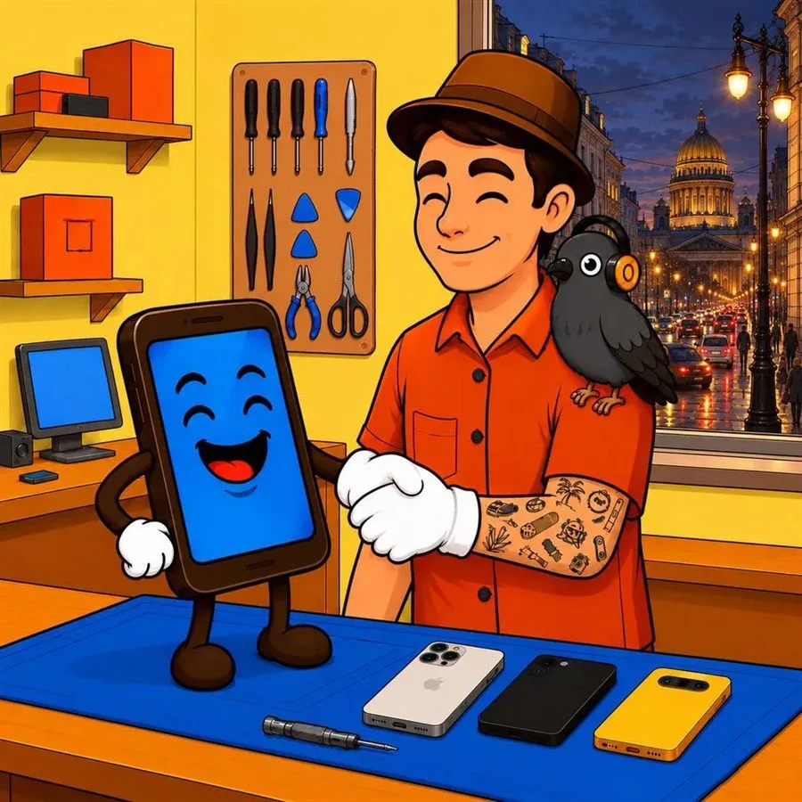
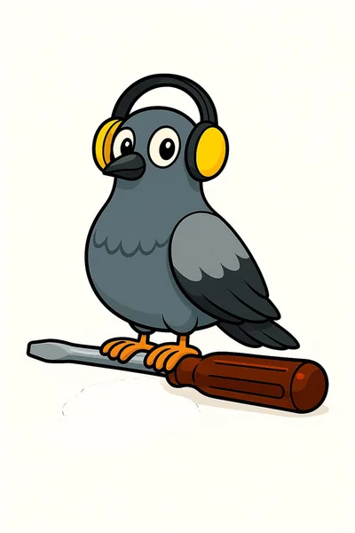

PigeonService
Леонид
Ремонт техники
в Петербурге
Телефоны · Ноутбуки
Компьютеры
С чем помогу
Также меняю корпуса, камеры, динамики и микрофоны. Варианты запчастей и стоимость обсуждаем до ремонта.
Формат работы
Я частный мастер. Работаю в своей мастерской и принимаю по предварительной договорённости, без выезда по городу.
Сначала разберёмся в задачеНапишите модель устройства, опишите поломку и, если возможно, приложите фото.
Диагностика без оплатыВ мастерской проверю устройство и расскажу, какие есть варианты ремонта.
Стоимость до начала работОбсудим запчасти и итоговую сумму. Срок зависит от поломки и наличия деталей, его тоже согласуем заранее.
Примеры ремонта
Восстановление iPhone 16
После сильных повреждений заменены дисплей, аккумулятор и корпус. Основная плата уцелела.
Корпус iPhone 14 Pro
Замена повреждённого корпуса с сохранением исправного дисплея.
Аккумулятор iPhone 14
Установлен аккумулятор Foxconn. После замены в настройках нет сообщения об ошибке.
Работа 1 из 3
Фотографии из материалов мастера. Каждый ремонт обсуждается отдельно.
Отзывы клиентов
★ 5,0 · 764 отзыва на Авито
Мастер своего дело,просто человек с большой буквы
Посмотреть отзывы на АвитоОбратился с заменой акб на 13 айфоне, заранее договорились о встрече. Телефон сделали быстро, бонусом почистили)
Частые вопросы
Можно узнать цену по фото?
Фото и модель помогают предварительно обсудить варианты. Точную стоимость называю после проверки устройства.
Нужно записываться заранее?
Да. Напишите или позвоните, чтобы договориться о времени приезда.
Выезжаете на дом?
Нет, ремонтирую технику в своей мастерской на улице Композиторов, 33/5.
Какие запчасти можно выбрать?
В зависимости от модели доступны оригинальные детали и аналоги. Обсудим подходящий вариант и стоимость до ремонта.
На связи лично
Опишите проблему и пришлите фото техники. Обсудим, что можно сделать.
+7 921 924-54-21
Санкт-Петербургул. Композиторов, 33/5Приём по договорённости